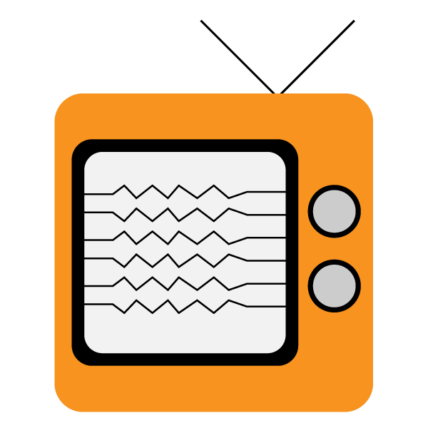
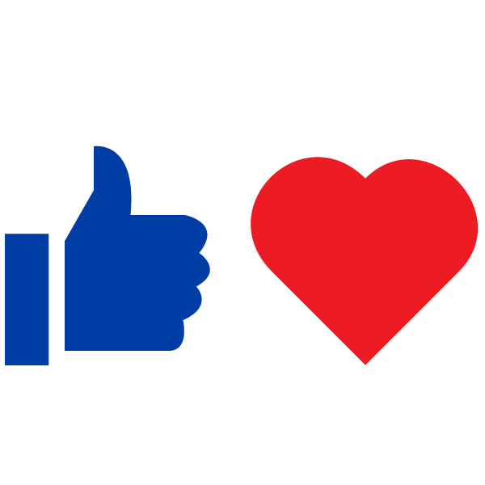

Have you had a break from digital screens? Take a five minute break every half an hour to give your eyes some rest. Spending too much time infront of a screen can lead to eyestrain or tunnel vision.
For most people, vision is one of the most important senses. It paints the picture of our everyday lives; it gives us something tangible to remember our memories and experiences with and most of all we use it to go about our day to day lives. So many things have changed in time regarding our eyes. Our understanding of them, our quality of health, our surroundings, our lifestyle and so much more.
Naturally, as a result, the experiences and challenges of the eye has evolved. We are in a moment of time where digital technology is as prominent in our lives as it has ever been.
It goes without saying the list of positives and possibilities this has brought is huge. However, with the capabilities of mobile phones and tablet devices grabbing our attention on a regular basis, we as a society are potentially at a crossroads in regards to how the evolving world is having an impact on our vision.
In this essay, I am going to explore how digital technology has become almost an essential for our everyday lives, where the current path is leading us in the future and what we can do now to ensure that our eyes can be just healthy now in the future.
I will talk about how our phones, computers and other gadgets have opened up a new world of possibilities in recent years
Also, in section one I will elaborate on how the ease of content such as television, music and social media have gripped us
During section two I will talk about the inadvertent sinister reality of the media industry and how this is bad news for our eye health
I will also talk about the dangers to our eye health digital technology brings
In the final section I shall emphasize the importance of consciously thinking about our eye health now
The advancement of digital technology over the past decade has been rapid. However, this advancement has been happening throughout many decades and even centuries. There had actually been certain forms of computer since the 1600’s, radio has been around since the 1930’s and television became a regular part of people’s lives roughly 70 years ago. Since then, the first mobile phone was made available to the public in 1973, invented by telecommunications company Motorla. The first laptop was invented in 1981 by software publisher and computer designer Adam Osborne; the laptop was named ‘The Osborne 1’. In more recent times we have been introduced to touchscreen mobiles, laptops, tablets and even watches.
These have become a big part of our everyday lives, but our gravitation towards digital technology in particular is not anything new. According to an article on the knowledge website ‘Classroom’, up to 20 million people in the United States would watch television on a daily basis in the late 1950’s. Back then the population of the United States was over 150 million, so roughly 20 million of this amounts to 13% of their population back then. To put that into context, fast forward to today and up to 96.5% of Americans has access to television today, according to Nielsen’s National Television Household Universe.
It was a similar story in the United Kingdom as well. A minimum of 20 million people used televisions in the early 1950’s. However, that was approximately 60% of the British population back then; today the number of households with a television is up to 95%. It is of course reminding that the size of the British population was roughly a third of the American one and the gap is obviously still substantial today. This is just one example of how digital technology has evolved over time. It goes without saying that the numbers on the usage of other devices such as laptops and mobile phones will have significantly increased over the years as well.
The obvious reason for the increase of people using these electronic devices is down to their capabilities. It was only ten years ago that touchscreen phones had really become available to the public. Along with that was the seamlessness that you could use certain features that actually felt like a perk on the phones made before then. These features have now become the norm, and have become another part of our lives. The obvious ones are photos and videos, email and internet. You of course now have access to tons of media streaming for casual videos, tv shows and movies; and of course, social media is the biggest one that has become integral amongst our daily activities.
As you can see, our draw to these digital devices is not some new phenomenon. What is significant however is the amount of time we spend on these devices, and this is where the real threat to our eye health comes in. A recent report from Ofcom back in 2017 on adults and kids’ use and attitudes shown that British users would watch television for approximately four hours a day. Also shown was that regular users of the internet would average of 3.5 hours a day. If you factor in mobile usage you could be talking up to a minimum of nine hours of screen usage every day. To top it off, kids aged 3-4 clock up to 20 hours of screen usage a week.
The reality is this is a major rise in screen usage than compared to the past. Of course, the world we live in now is vastly different to the one back in the 1950’s. The capability to do new things and to do old things more conveniently has a massive effect on our lives, and I do not think we can blame ourselves for taking advantage of these advantages in digital technology. What we can do however is acknowledge that this cannot be good for our overall health, let alone our eyes. The change from now to even ten years ago is quite a significant changed let alone what happened over half a century ago, so this is something which needs to be brought to our attention.
I also find it alarming how much exposure kids are having to these digital devices. It is quite a contrast to a decade ago and even back in my childhood another decade on top of that. Personally, I am glad that I grew up at a time when the features of these digital devices weren’t as capable as they are now. Of course, we had television and games consoles were another source of entertainment, but our connection with the real world felt rawer and more natural than I think it does today. I will give you some examples of this.
Social media is the biggest one. On one side the seamlessness ability to now be able to contact anyone from anywhere at any time is one of the best things digital technology has made possible. On the other hand, it has opened up a different kind of culture. The one where people aim to seek approval and praise, and what we do on the real world seems to be a carrot for the ultimate reward of shiny icons of acknowledgement for what we have been doing. A 2016 study on ‘The Power of the Like in Adolescence’ found that the same brain circuits are activated by social media likes are similarly activated when eating chocolate and winning money. This cannot be a healthy way to be.
To illustrate this point further, Psychologist Emma Kenny explains that this mentality of approval seeking comes whenever you start taking the publics reception as validation for your own opinions, almost completely disregarding how you may have felt at that time.
“If you believe that other people’s opinions are facts, your esteem will be low, your confidence will be terrible and you’ll constantly seek approval. If you’re somebody who deletes posts because they’re not getting the reinforcement, that plays into all of those negatives”.
Emma Kenny Psychologist
You could argue that social approval is nothing new, and has been the case for us and even other creatures throughout history. There is undoubtedly a darker side to how social media has affected us psychologically and emotionally, and this issue needs to be addressed for our own health. Not to mention the fact this obsession also clocks up further screen time for our eyes. In the next section I am going to discuss how the media industry are aiming to keep us hooked and why this is a bad thing for our eye health today and the implications of that in the future.
Taking a holistic approach can not only be good for your eyes, but also your overall health. Mental health can be the difference between you feeling healthy or unwell.
When Netflix are working on how to beat their competitors, who would you say they are looking at? Whilst the obvious answers are not wrong, according to their Chief Executive Reed Hastings, their biggest rival to surpass in order to reach their goals is: sleep. That very thing that we all need and also the thing that the people of Netflix will naturally need as well. Reed explains himself:
“You know, think about it, when you watch a show from Netflix and you get addicted to it, you stay up late at night. We’re competing with sleep, on the margin. And so, it’s a very large pool of time.”
Reed Hastings Chief Executive of Netflix
Your initial reaction to this is naturally one of disturbance. Whilst you can argue that what Reed says makes sense, realistically speaking, tackling people’s sleep surely cannot work in the long run. A continuous lack of sleep can result in mental health issues, heart disease, high blood pressure and diabetes. I do not think Netflix would be quick to claim responsibility for a surge in such issues. Whilst the purpose of this essay is to illustrate the potential threats to eye health, you will see that these activities also have a negative impact on our overall health, and such issues can actually affect the quality of your vision.
For example, stress has been suggested to be a trigger for our vision to gradually deteriorate. A study from the EPGA Journal claim that persistent stress can have an effect on our brain and eyes, which could lead to conditions such as glaucoma – which the fluid pressure within the eye rises. Anxiety can be another trigger for effects on the eye. The severity of the issue can vary, but more often than not anxiety may not lead to any long-lasting conditions. It can however lead to flashes in the eyes, experience of tunnel-like vision and possibly even see things around the periphery of your vision that might not actually be there.
In a rapidly developing digital world, there are more ways to do some bad to your eye health. If you spend plenty of time on a computer, looking at your phone or watching television on a regular basis, you are essentially unconsciously doing harm to your vision. These electronic devices are changing how we function, how we think and how we feel. When staring at digital screens, it alters our blinking rate. Blinking sweeps away any debris under the eye and keeps it clean. Using these devices hampers this. This is just one of many examples that we can use.
In terms of some worrying statistics, A survey from The Vision Council says 56% of parents (living in the United States) reported that their children have been affected by symptoms of digital eyestrain. Children’s eyes are developing the most between the ages of 5-12, and the reality is unless we start consciously acting on this, statistics like this are only going to go up. Arguably one of the biggest startling statistics is the rise of children with near sightedness. In author and therapist Meir Schneider’s 2016 book on natural eyesight improvement, in the past century, the percentage of kids with near sightedness has risen from 6% to 84% (in certain countries).
Now, in regards to these statistics, it is worth asking if this is something that has gradually inclined throughout the decades, or have the percentage of these conditions been similar all along but we have only just recently been able to find out. In an article from multimedia news organization N.P.R., ophthalmologist professor Dr. Ivan Schwab believes humans have been prone to potential Myopia (near sightedness) since the very beginning, albeit he does not believe the numbers would have been as high back then as they are now:
"As long as primates have been around, there's probably been myopia".
Dr. Ivan Schwab Ophthalmologist Professor
Since digital technology has evolved, the number of people with these conditions have likely took a logical path. In the instance of Myopia, this is something that future generations, if they are not born with the condition, are possibly more likely to be diagnosed with it than the people of today or those of the past; not only that, but they may well develop the condition at an earlier age as well. Myopia is, as of now, not 100% recognised as a hereditary condition, so if someone in your family was born with it or developed it over a course of time during their life, it does not necessarily mean a new-born in the family will definitely have Myopia from birth as a consequence.
So, what is it about these digital electronics that give them the potential to do our eyes, not least our overall health, damage over time? An article from eye health website All About Vision explains that these screens contain what is known as blue light. They produce more energy due to being a short wavelength. The blue rays are also known as ultraviolet (UV) radiation. These are so strong that they can cause a suntan, too much of it on your skin however can cause some damage. Moderation of UV radiation however can be an alternative way of gaining adequate vitamin. D. Bear in mind that sunlight is the main source of blue light, just to emphasize the strength of it.
It’s worth reminding that the blue light on your screens is not going to affect your skin, this instance is mainly for your eyes. The cornea and lens block out almost all UV rays for reaching the retina of your eye, however almost all blue light does pass through. The reality is until these screens can somehow be produced without the use of blue light, the potential for effects on the eye is always going to be there. There has been recent examples of operating systems and websites trying to cater for this. For example, Apple now have an option called night shift, which projects warmer colours from their devices. Twitter has also done similar by including a night mode theme to their platform.
As you can see, there are many ways which your eyes can be affected, particularly more than ever. Your mental health is important for your overall well-being but can also lead to stress in the eyes. Some of these conditions may not be new or just a recent phenomenon but the rate that people will develop them will go at a faster rate the more we are exposed to these devices, and the reduction of blue light in the future could well be pivotal. In the next chapter I will talk about how we can look after ourselves.
Getting fixated with the same routine of scanning from left to right constantly is not good for your eyes. Acknowledge what is on the edges of your vision to break the habit.
I think I have made it pretty clear now the importance of looking after yourself, mentally as well as physically. In a world which is now hugely digital orientated, a world which is more demanding. If we are not careful it can be pretty easy to go on a downward spiral. Of course, stresses of everyday life are hardly anything new, it is something people from generations throughout history have had to put up with. I do believe we are in new territory now. We have to look and act the part as best as we possibly can, in the digital world as well as the real one.
It is easier than ever to be scrutinised. Take looking for a new job as an example. These days, employers will go through the internet and your social media to find stuff about you, and if there is one thing they find that they do not like, they will possibly disregard you just like that. Social media is a very judgmental place. Post something that opinionative about a delicate topic or say something which in this day and age has the potential to be deemed as non-politically correct, your actions tend to loom over your head for the foreseeable future as a consequence. There is no hiding place
So, with all these aspects to consider, how do you take care of yourself? There are different ways of doing so. One of the biggest ways of doing so is by keeping yourself as stress free as possible. A simple technique you can work on for this is your breathing. Work on having a steady and consistent breath, taking as long to exhale as it does to inhale. This is one of the most important things you can do. Breathing affects your heart rate and should help clear your mind. When you are stressed, your body becomes tense, your thinking potentially becomes muddled and of course can affect your heart. In a world where we have to deliver in many ways, something as simple as breathing is critical.